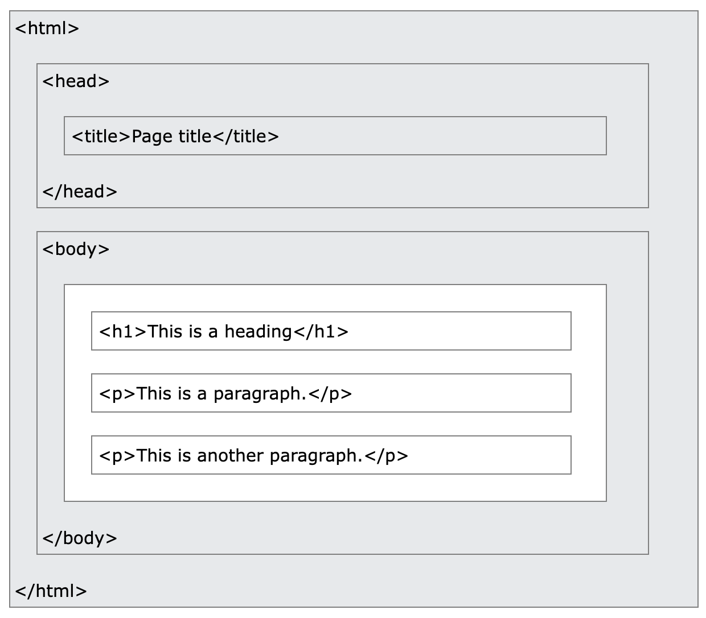

This week we are going to continue learning the fundamentals of HTML5 with a focus on page layout. We are also going to start work on assignment one, which is due Friday 28 October by 5 pm.
Remember that all of these tutorials are designed so the source code implements what is presented. Make sure to view the source code of all tutorial pages to view how different techniques are implemented.
Last week we covered the following:
Don't worry if you cannot remember the specific tags, terms, and syntax to use. This is normal. It is common to need to look up specifics in a reference guide or cheatsheet. The W3 Schools HTML Basics page provides a great summary. We will also review these again this week.
The layout of a simple HTML document is as follows:
<!DOCTYPE html>
<html>
<body>
<h1>Hello World!</h1>
<p>Look at me code!</p>
</body>
</html>
Elements are nested, so think of them as nesting dolls, as presented in this graphic from W3 Schools

Remember that HTML5 is hierarchical, which means content is organised as headings (h1 - h6) and paragraphs. These are indicated through tags. Some tags require start and end tags. Make sure to remember end tags. A code editor, like VSCode, may automatically create end tags, so pay attention that you don't accidentally have too many. Other tags like <br> and <img> are empty elements, which have no content and do not have end tags.
You may have noticed that when creating links or embedding images, you need to add information to the tag to indicate where to get or direct the relevant content. These are called attributes. The <a> is used to create hyperlinks, but your need to include the href attribute to indicate where the hyperlink goes to. These are always included in the start tag and generally come as name/value pairs, or as name="value"
Here is a handy Attribute Reference
Find your folder from last week and open in VSCode. Set up a new HTML document. Title it tutorial2.html. If you can't find your folder or if it was deleted, then create a new folder and save your page as index.html. We are going to use this to test out different attributes.
Try out the following:

Test your skills with these exercises from W3 Schools. Go as far as you feel comfortable.
Using what we learned in class and in the labs, make a simple html page that explain Open Source principles.
Assessment criteria:
Upload your html page to Moodle by Friday 28 October by 5 pm. If you referencing images using relative links (that is, you are including images on your computer rather than on a website), make sure to include image file as well with your submission.
Late submission will be penalised.
We will be working on the pages within class for the next two weeks. If you want to work on your page outside of class, you can use a simple text editor for HTML documents (TextEdit on a Mac or Notepad on a PC) or download VSCode on your home computer for free. Do not use a word processor like Microsoft Word, as this will format your text and destroy your file. You can save your assignment to a USB drive or upload to OneDrive in order to access it outside of class. In general, it is recommended that you back up all your work to OneDrive, since files may not be saved correctly on MacLab computers. You are also welcome to bring your own laptop to class if you prefer to use that.